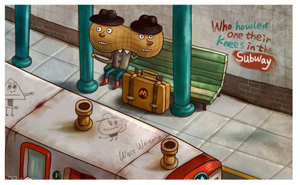

福州厦门的房价在过去的十几个月中, 不断地上升. 前年住所附近的侨福城, 80 多平米的小户型卖到了三百多万. 在榕在厦的年轻人如若不是有些家底, 根本不用指望自己的薪水和存款能够跟上房价的涨幅. 可能今年算出来不吃不喝攒满 7 年(算上定期存款的复利)能够凑足一套小户型的首付, 到了明年发现离这个目标并没有变得更近.
在房价和未来丈母娘的高压之下, 年轻人实现财富自由的阈值变得越来越高. 加之中国社会的上升通道正在不断地收窄, 年轻人不论是想实现自我的价值, 还是只是单纯地想富成一个废物, 光靠单纯的打工挣钱已经很难实现了.

而互联网创业这条路无疑是视野内实现这一目标的光明大道, 但凡有些抱负的青年才俊, 都知道应该抓住身边的机会, 在绝境中寻求突破.
14 到 15 年, 我还是一个初出茅庐的毕业生, 在厦门一家软件公司度过了我迈出校园后的第一年. 部门里的同事们都相当优秀, 相处也十分地融洽. 从中我收获到了很多知识, 技能, 友谊. 虽然紧凑的工作长期需要和小伙伴们一起加班到九点半, 但并不妨碍它成为我迄今为止最开心的一段工作时光. 我关心公司和项目的发展, 但不需要为其焦虑. 尽心尽力做出自己应有的贡献就够我在晚上睡上一个安稳的觉.
到了下半年由于公司层面的决策和调整, 项目开始经营不善, 陆续进行了几波大规模的裁员, 熟悉的小伙伴陆续离开, 我结束了我的这段梦幻开局. 在这个时间点, 我的项目老大邀请我一起创业, 我几乎立马就答应了.
毕业第二年能够成为技术合伙人, 联合创始人, 这是没经历前不敢想象的. 并且我们在几个月的辛苦努力后获得了一笔数目可观的投资, 起点已经算得上蛮高了. 所以当时摆在我面前的是一个充满诱惑力, 难以拒绝的尝试. 今时今日如果让我再选择一次, 我同样会坚持走上这条路, 不过心中会比之前多出很多的考量, 需要权衡利弊之下再做出判断. 这也是我这篇文章希望分享给你的: 假如你也是个年轻的技术合伙人, 面临这一选择的时候, 你需要知道自己将失去什么.
高收益通常伴随着高风险, 这是一个大家都懂的道理. 但是年轻的技术合伙人(当年的我)在这个问题前面可能就看得没那么清楚. 一个典型的心路历程是: 我作为一个技术合伙人, 不需要额外的资金投入, 赚了我有分红, 亏了也不会让我赔钱. 听起来我的风险都已经有人 cover 掉了, 如果工资还不算太低的话.
这种想法非常的浅薄和片面, 套用政治题的答题套路来说, 就是没有用发展的眼光来看问题. 事实上, 你在创业这件事上的付出比你想象中的要多.
首先是机会成本, 人是不能分身的, 你选择一条人生的分支, 必然会放弃掉无数种可能的平行宇宙. 创业公司都会规定一些退出机制, 你可能需要在一家公司呆满 3 年甚至更久才能获得你应得的部分. 而这期间损失的是你的人生, 你最珍贵的青春, 以及无数种可能性. 你可能需要拒绝掉一份钱多活儿少的国企美差, 你可能预设了一条职业规划却要被打断. 几年以后你年近 30, 可能已经无力完成当初设定的雄心壮举. 而这期间如果你放弃创业的话, 可能什么也得不到, 需要从零开始. 就算你没有放弃, 很大概率上由于公司的经营不善, 九死一生, 也需要从零开始.
其次是经验的积累的侧重点不同了, 就以程序员来说, 如果你按照原计划, 三年五年内都是技术积累的一个阶段. 那么在这期间你可能是尝试了很多新奇的东西, 比如用 swift 给自己的 mac 写了一个小应用, 一面上架 AppStore 一面开源了发布到 Github 上, 你可能学习了 Go 语言, Docker 等等当下热门的技术宠儿, 对比了他们之间的优劣, 在以后的工作中能够迅速决定新功能使用的技术栈, 你可能搭建了自己的技术博客, 在某方面有深刻的积累, 成为这个领域的意见领袖. 但是作为过于年轻的技术合伙人, 你在技术方面没有深刻存量的同时, 可能也很难再在其上有所积累. 这个期间你会了解很多商业上的东西, 产品上的东西, 投融资上的东西. 等到你创业失败的时候, 你的技术积累可能让你很难回归到一个优秀的技术人员的角色了, 技术上的缺口可能还轮不到你来和年轻人比拼经验.
所以你最少最少, 有这两点需要考虑, 现在你知道了做为一个年轻的技术合伙人, 你并不是 hava nothing to lose. 你在追求机遇的同时, 一样的有高风险的存在.
此外你要知道创业是否会为你的购房带来风险, 厦门的购房是有政策限制的, 福州从今年年初开始也增加了限购政策. 这就意味着, 假如你的创业需要你转移城市的话, 你需要有相应的措施来规避风险. 我从创业后就来到了福州, 当前比较后悔的一点, 就是没有将自己的五险一金都交在厦门, 对于自己的公司来说, 这应该是很好操作的一件事. 不论你手头的工作如何, 选择自己栖息的城市, 是一件需要慎重的事情.
先分享这么多, 希望某个站在人生十字路口上的年轻人能看到. 全盘考虑好自己的得失, 然后义无反顾地一起投身到创业的大军中来.